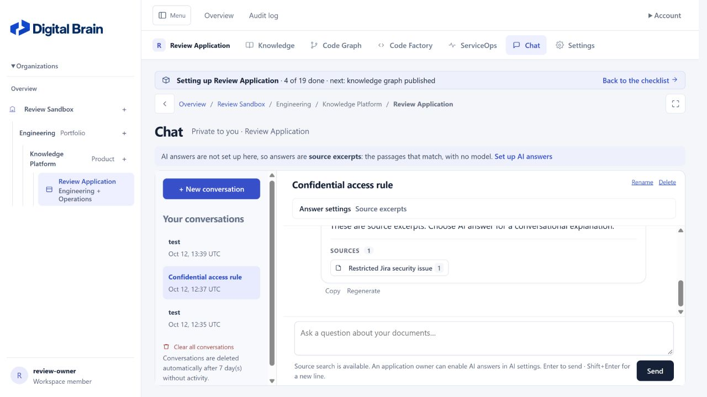
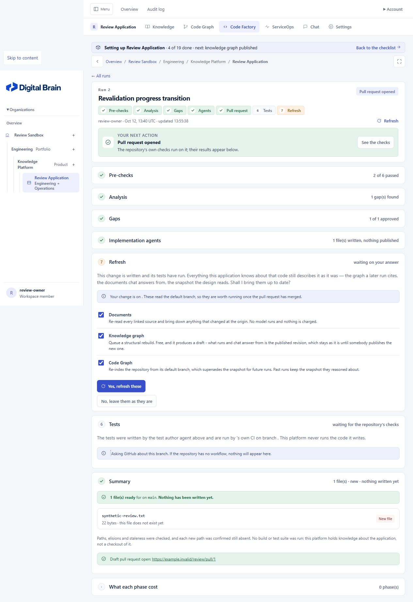

Digital Brain — revalidation of Claude's fixes
Latest verification at
11dfd8c: All five reported defects and the remaining R01 ordering issue are verified fixed. All five gates pass; 1,789 tests ran with two skips. Read the closure report. The assessments below are historical.
Date: 12 October 2026 (IST) · Reviewed revision: 3b3f46a · Original review revision: 73bcfb3
Verdict: four defects are verified fixed. The original Code Factory review-stage failure is fixed, but its wider live-update acceptance checks still reveal a stage-order defect. Full closure is therefore not confirmed.
The original report remains the historical baseline. Desktop behavior was prioritized. No application source code was changed during this revalidation. I refreshed collected static assets and used a restarted, isolated review server with synthetic data.
Issue-by-issue status
| Original ID | Status | Revalidation evidence |
|---|---|---|
| D01 — saved triage evidence disclosure | Fixed | The original excluded-viewer and post-restriction probes now return HTTP 409, without the excerpt. New regression coverage checks allowed readers, excluded readers, and later restrictions through REST, MCP, run pages, and incident pages. |
| D02 — missing live review stage | Original case fixed; related edge remains | The Gaps stage appears without reload; Select all/Clear all operate on the inserted controls. When multiple later stages appear in the same refresh, however, their order is reversed. See R01 below. |
| D03 — desktop composer overlap | Fixed | At 1280×720, with the same long-name review fixture and unfinished setup, message bottom and composer top both measure 573.5 px: 0 px overlap, versus 23.25 px originally. Composer bottom is 699 px, inside the viewport. Chrome regression tests also cover 1366×768, 1440×900, and a long conversation's latest answer. |
| D04 — dropped SSE stream handling | Fixed for the tested interruption | Transport errors are distinguished from server error frames. The UI states “Connection lost. Checking what was saved…”, disables sending during settlement, and shows the saved stopped answer. The added browser test verifies one stream/worker start and no duplicate reopening. Recovery is a safe stop-and-reconcile, rather than transparent streaming continuation. |
D05 — malformed API mode |
Fixed | The original array/object requests now return HTTP 400 with JSON invalid_request. String validation precedes set membership. |
| O01 — direct source-reading policy | Clarified; permission scope unchanged | The connector form now explicitly says that this governs answers, and that application members may still open sources and read them in full. This implements the disclosure option in the original report; direct source reading is still application-wide by design. |
| O02 — sidebar type-label wrapping | Fixed | Type labels are non-shrinking and do not wrap. The new desktop browser test checks “Product” remains on one line at 1280×720 and 1440×900. |

R01 — P2: simultaneous live-stage insertion reverses the workflow order
Location: static/documents.js:101.
The new insertion loop looks up each incoming stage's preceding sibling in current. Replacements update that map, but newly inserted stages do not. When several adjacent stages are new, each therefore inserts after the same older sibling, placing the later stage before the earlier one.
Independent browser reproduction:
- Open a synthetic Code Factory run with active delivery, whose current page contains stages 1, 2, 3, 4 and the cost section.
- Simulate the worker completing delivery by updating only the isolated database record and its synthetic proposed-change metadata. No repository or external pull request is created.
- Allow normal live polling to bring in the completed page.
- Observe DOM order 1 → 2 → 3 → 4 → 7 → 6 → 5 → cost.
- Reload the same page. The server-rendered order becomes 1 → 2 → 3 → 4 → 5 → 6 → 7 → cost.
All stages now exist, so this improves the original missing-stage behavior. Their reverse order nevertheless presents Refresh before Tests and Summary, contrary to the workflow strip. It remains incorrect until reload.
Recommended follow-up: Add each successfully inserted node to current immediately, so the next stage can use it as its predecessor, or reconcile the container in server order. Add a regression test in which at least two adjacent stages arrive in a single polling response; the current new test inserts only the review stage.
Acceptance: Multi-stage insertion preserves the same order as a full page render and continues to preserve focus and unsaved input.
Evidence: live versus reload order.

Verification results
| Check | Result |
|---|---|
| Ruff | PASS |
| Migration drift | PASS — no changes detected |
| Production defaults | PASS — no issues |
| Full suite with required Chrome coverage | 1,788 run: 1,785 passed, 1 error, 2 skipped; 1,027.936 seconds |
| Focused rerun of reported-fix regressions and the timed-out test | PASS — all 78 tests, 65.364 seconds |
| Scorecard | PASS — no regressions; graph median 21.5 ms, keyword median 13.8 ms |
The two full-suite skips remain PostgreSQL-specific full-text coverage under SQLite, and symlink creation unavailable to the account. Required Chrome coverage ran. All added reported-fix tests passed in the full run and focused rerun.
The full run was not completely clean. Its live-progress timeout did not reproduce in the focused rerun. That is evidence against a consistently failing behavior, but another clean full-suite run is still required before claiming an entirely clean full regression gate.
Evidence: full test log, 78-test rerun, API probes, saved-brief probes, scorecard.
The full suite's new tests for Claude's reported fixes passed. Its one error was the existing LiveProgressTests.test_the_page_updates_in_place_when_the_run_finishes: a 15-second selector timeout waiting for the triage run to lose data-live-pending. The follow-up run passed this test and all 77 other selected regressions. A passing follow-up does not rewrite the original full-run failure into a clean full-suite result.
The desktop check initially loaded assets cached from the previous review and reproduced the old layout. Those measurements were discarded. After collectstatic and a restart at a fresh loopback origin, the new composer was static, the overlap was zero, and the live-insertion code was active. The asset refresh copied four changed files. A running deployment still needs to load these refreshed assets; this revalidation did not restart an unrelated application instance.
Scope and evidence
- Compared the eight commits since the original review, including application code, tests, CSS, connector copy, and documentation.
- Reran the original API and saved-brief probes against the existing isolated synthetic review database.
- Independently checked desktop chat geometry and Code Factory stage transitions with current assets.
- Ran required Chrome coverage and the repository gates, with the results recorded above.
- Did not invoke live AI models, external connectors, actual delivery, or production load tests.
The remaining work is R01 and any reproducible test failure. O01 is now accurately disclosed, not transformed into source-level confidentiality. Original limitations such as production PostgreSQL coverage, integration testing, backups, and exact concurrent AI-budget guarantees remain outside these fixes.